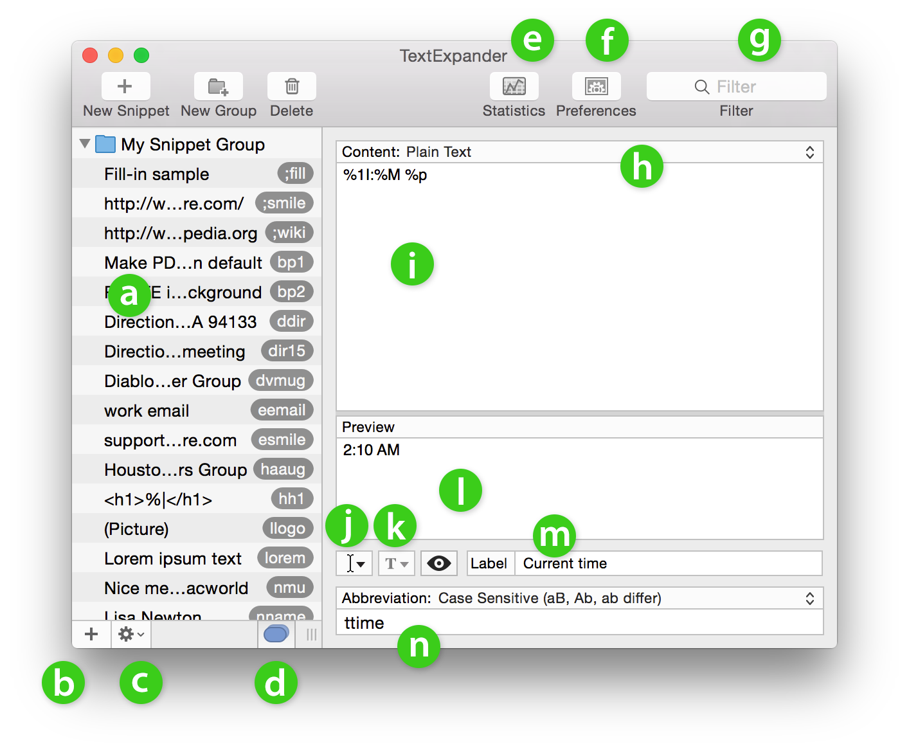

Help: Guided Tour – Main Window

- Snippets and groups list
- Add snippets and groups (see Creating Snippets and Grouping Snippets and Importing Groups)
- Tool menu (see Sorting and Filtering and Duplicating, Saving and Printing Snippets)
- Conflicting snippets (See Creating Snippets > Conflicting Abbreviations.)
- View snippet usage statistics (see How Much Time Has TextExpander Saved Me?)
- Preferences and settings (See Preferences.)
- Filter snippets for search and sorting (See Filtering.)
- Snippet format drop-down menu (see Creating Snippets: Format)
- Snippet content (See Creating Snippets)
- Insert built-in macros: date, time, clipboard, cursor position etc. (see Creating Snippets: Adding Macros to Snippets)
- Formatted text style options (see Creating Snippets: Format)
- Preview expanded snippet (See Preview Snippets.)
- Snippet label (see Creating Snippets: Labeling Snippets)
- Snippet abbreviation, case sensitivity setting (see Creating Snippets: Setting Case Sensitivity)
© SmileOnMyMac, LLC, dba Smile. All rights reserved.
TextExpander is a registered trademark, Smile and the Smile logo are trademarks of SmileOnMyMac, LLC, dba Smile.